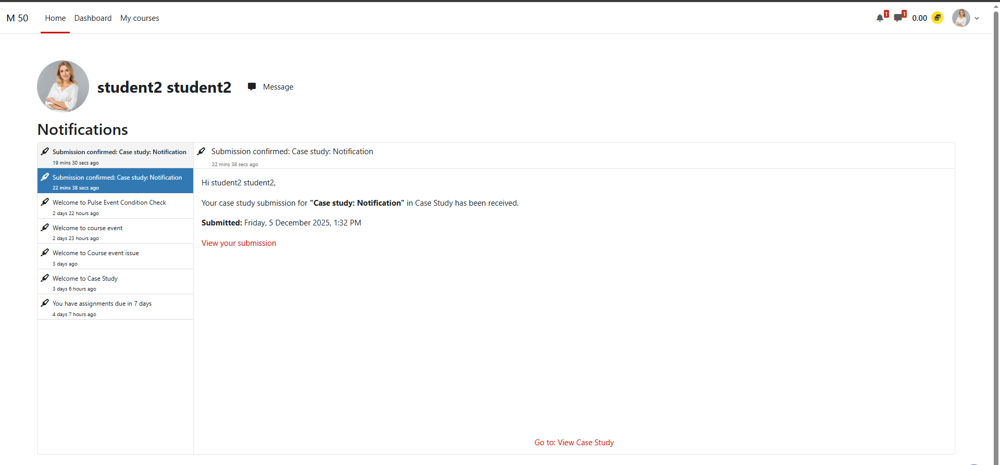
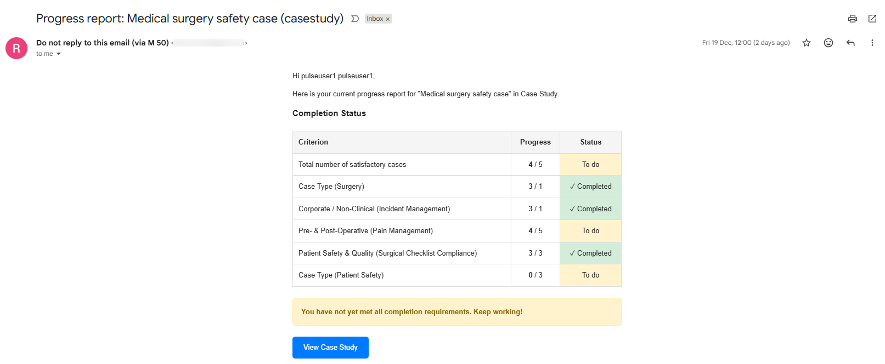

Notifications & Reports
The Case Study plugin sends automatic email notifications for key events and runs two scheduled weekly reports to keep markers and students informed.
Instant notifications
These emails are sent immediately when specific events occur.
1. New submission notification — to graders
| Detail | Value |
|---|---|
| When | A student clicks Finish and Submit |
| Condition | Activity setting Notify Graders About Submissions = Yes |
| Recipients | All users with mod/casestudy:grade capability + addresses in the Email Others field |
| Subject | [Student Name] has submitted: [Case Study Name] |
| Body | Student's name, case study title, course name, and a direct link to grade the submission |
2. Submission confirmation — to the student
| Detail | Value |
|---|---|
| When | A student clicks Finish and Submit |
| Recipients | The student who submitted |
| Subject | Submission confirmed: [Case Study Name] |
| Body | Confirmation message with submission timestamp and a link to view the submission |
3. Grade notification — to the student
| Detail | Value |
|---|---|
| When | A grader clicks Mark Satisfactory, Mark Unsatisfactory, or Save Feedback |
| Condition | The Notify Student checkbox is ticked on the grading form |
| Recipients | The student whose submission was graded |
| Subject | Your case study has been graded: [Case Study Name] – [Status] |
| Body | Outcome status, grader name (unless hidden), feedback text, and a link to view the marked submission |
If Hide Grader Identity is enabled in the activity settings, the grader's name is omitted from the notification.

Weekly scheduled reports
Two automated tasks run every Monday morning. Site administrators can adjust the schedule via Site Administration → Server → Scheduled tasks.
Weekly Learner Progress Report
| Detail | Value |
|---|---|
| Schedule | Every Monday at 09:00 (configurable) |
| Task class | mod_casestudy\task\send_learner_reports |
| Recipients | All enrolled students with submit capability, in courses where a Case Study has completion rules enabled |
| Subject | Progress report: [Case Study Name] ([Course Name]) |
| Body | Completion status (complete/incomplete), progress toward each completion criterion, motivational message if incomplete, link to the activity |

Controlling notification behaviour
At the activity level (Activity Settings)
| Setting | Effect |
|---|---|
| Notify Graders About Submissions | Turns the grader new-submission notification on or off for the whole activity |
| Email Others | Adds extra recipients to the grader notification |
| Default for "Notify Student" | Pre-fills the Notify Student checkbox on the grading form (graders can override per submission) |
At the grading form level (per grading action)
| Setting | Effect |
|---|---|
| Notify Student checkbox | Determines whether this specific grading action triggers a notification to the student |